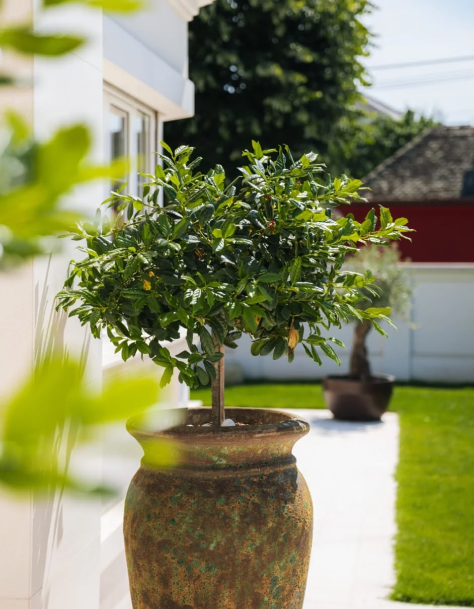
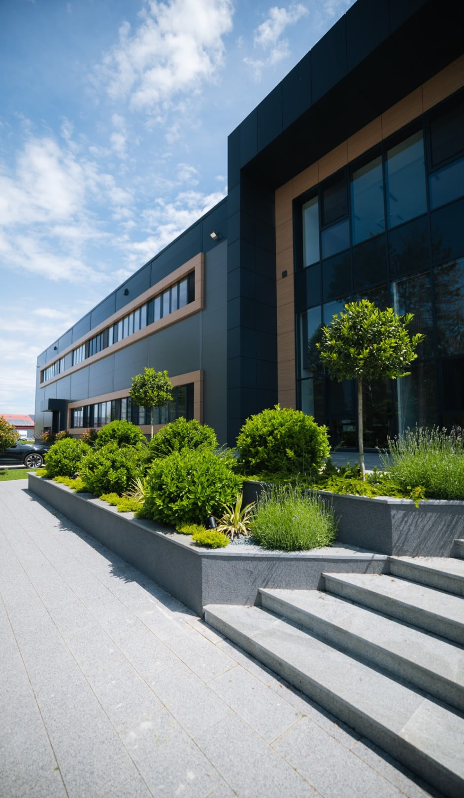

Projektujem vrtove i dvorišta od prve ideje do gotovog prostora - raspored, biljke, materijali i 3D vizualizacija pre nego što se iskopa prva rupa.
Zakaži besplatnu konsultacijuRadim dizajn privatnih dvorišta, vikendica i poslovnih objekata.
Odeš u rasadnik i kupiš ono što ti se svidi tog dana. Grm ovde, drvo tamo. Posle godinu dana neke biljke uguše jedna drugu, a druge uopšte ne uspevaju jer im mesto ne odgovara.
Dvorište stoji kao prazan prostor koji ne koristiš. Trava se kosi, ali niko tu ne sedi, ne pije kafu, ne dočekuje goste.
Probao si da sam nacrtaš raspored po fotografijama sa interneta. Na papiru izgleda dobro, ali ne znaš kako će prostor izgledati kad drveće poraste, gde treba senka i gde popodne najviše greje sunce.
Svaka nova sezona znači dodatne troškove za biljke koje se presade ili uginu, jer prvobitni raspored nije bio dobro osmišljen.
Radim kompletan dizajn tvog prostora pre nego što se bilo šta kupi ili posadi. Prvo idem na teren, merim prostor, gledam osunčanost, tip zemljišta i ono što već raste. Onda pravim raspored, biram biljke koje odgovaraju tom mikroklimatu i pravim 3D vizualizaciju da vidiš prostor pre realizacije.
Kad dizajn odobriš, organizujem i realizaciju - od zemljanih radova do sadnje poslednje biljke.


Vrt u koji izlaziš svaki dan, ne samo kad kosiš travu.
Sklad koji ostaje i van sezone cvetanja, ne samo par nedelja godišnje.
Biljke izabrane da rastu tamo gde su posađene, bez stalnog doterivanja.
Uređen prostor oko kuće menja utisak i cenu pri prodaji ili izdavanju.
Prostor koji ne traži da nešto stalno doterujete ili pomerate.
Znaš tačno šta i gde saditi, bez nagađanja i bačenog novca na biljke koje ne uspevaju.
Ovo su fotografije završenih projekata - privatnih dvorišta i poslovnih prostora, od projektovanja do realizacije.
Prilaz porodične kuće - ukrasno kamenje i oblikovan šimšir
Staza kroz travnjak sa mladim sadnicama i japanskim javorom
Terasa sa zimzelenim stablom u velikoj saksiji
Ozelenjavanje poslovnog objekta - lovor i lavanda uz fasadu
Uređenje prilaza poslovnoj zgradi - žardinjere i zelenilo
Poslovni kompleks - kameni žardinjeri i oblikovano zelenilo
Pričamo o tvom prostoru i željama, dolazim na teren ili gledamo fotografije i mere.
Pravim raspored prostora prilagođen tlu, svetlu i tome čemu vrt treba da služi.
Vidiš prostor pre nego što se bilo šta pokrene, i tražiš izmene ako nešto ne odgovara.
Dobijaš cenu prilagođenu tačno tvom projektu, ne paušalnu cifru iz kataloga.
Biram materijale i biljke i pratim radove sve do poslednje posađene sadnice.
Cena zavisi od veličine prostora, kompleksnosti dizajna i obima realizacije. Zato prvo idemo kroz konsultaciju, a tek posle toga dobijaš ponudu koja odgovara tačno tvom projektu.
Svaki plan pravim prema klimi tvoje lokacije, tipu zemljišta i tome koliko vremena realno želiš da provodiš u održavanju. Cilj je vrt koji za pet godina izgleda bolje nego prve godine, ne prostor koji zahteva stalne izmene.
Napiši mi nekoliko rečenica o svom prostoru i, ako imaš, pošalji par fotografija. Javljam se u roku od dan-dva da dogovorimo termin za teren ili poziv.
Zakaži besplatnu konsultacijukontakt@vrtnidizajner.rs • +381 60 000 0000
Ako ništa ne promeniš, trava se i dalje kosi, biljke se biraju nasumično, a prostor ostaje mesto pored kog prolaziš, ne mesto gde sedneš. Odluka da napraviš plan menja to već od prve sezone.